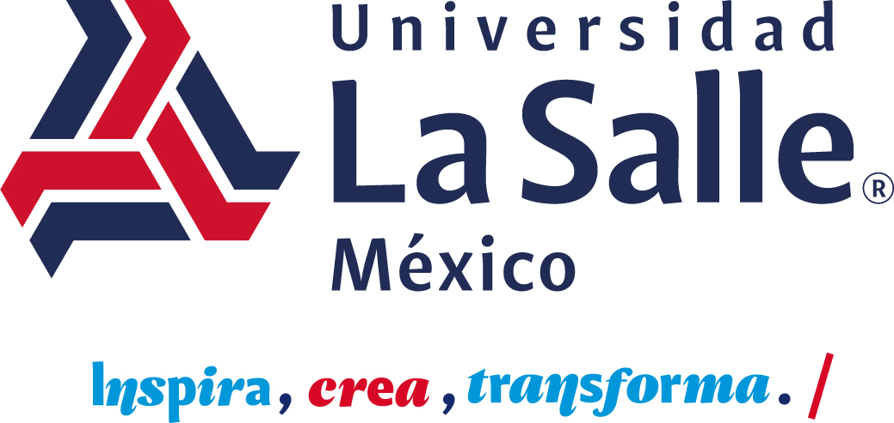

UNIVERSIDAD LA SALLE · MÉXICOFAMADyC / PRESENTACIÓN DGD
LICENCIATURA EN
Diseño
Gráfico &
Digital
✳
Comunidad, formación
y práctica del diseño.
CONTENIDO

FAMADyCLICENCIATURA EN
Comunidad, formación
y práctica del diseño.